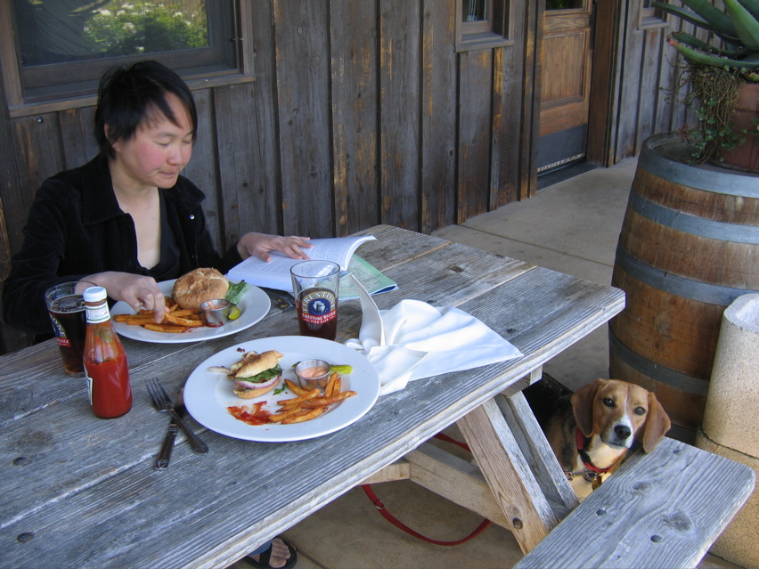

<--Previous Up Next-->

Firestone-Walker Brewing Company
Firestone-Walker's Double Barrel Ale was an outstanding break from all that wine, and we got the single picnic table on the porch so Huxley could join us. The reason we were the only outdoor diners is that the winds blowing up the Santa Ynez Valley were so strong that practically everything on the table became airborne at one time or another. Fortunately the beagle was tied down.